This is a guide for deploying VMware vSphere clusters with Blockbridge
storage. It is roughly structured in chronological order: the beginning of the
document focuses on points to consider before you deploy while the end details
the tunings to apply once everything is up and running. The final two pages
are a “cheat sheet” of deployment steps and command lines for deploying and
tuning the system.
The Deployment Planning chapter opens with a discussion of how to size your
VMFS datastores for performance and flexibility with Blockbridge. It goes on to
detail how best to configure VMware’s Storage I/O Control and Storage
Distributed Resource Scheduler features with all-flash Blockbridge storage.
Connecting to a Blockbridge Dataplane gets into the details of deploying
the solution. The bulk of the chapter is devoted to properly configuring iSCSI
multipathing with port binding. You can skip this if you’ve done it before. The
chapter then gets into how to provision disks and iSCSI targets on Blockbridge,
and how to connect them to your ESXi hosts.
Tuning the Hosts enumerates recommendations for ESXi host-level parameters
that affect the performance and capabilities of iSCSI storage.
Tuning the Guests offers additional recommendations for achieving high
performance from guest VMs.
Tip: All of the deployment steps and recommendations are summarized in the Deployment and Tuning Cheat Sheet at the end of the document.
DEPLOYMENT PLANNING
Datastore Sizing and Performance
Tip: Our base recommendation is to provision one
Blockbridge LUN for each Blockbridge dataplane complex and create a VMFS-6
datastore from it.
Historically, VMware’s storage performance was entirely limited by the backend
array. In those days, many deployments found using a larger number of smaller
LUNs achieved additional concurrency. VMware could get more I/O out to the
array and the array did a better job scheduling, resulting in higher overall
performance.
With an NVMe array, VMware’s iSCSI initiator is likely to be the performance
bottleneck. When running an ESXi host up in the range of hundreds of thousands
of IOPS, you’ll see a big rise in the system CPU time as well as a lot of NIC
interrupts. You can manage the bulk of this by simply having enough CPU
resources available for the storage subsystem. Secondarily, however, you may
find that you can unlock some additional initiator-side concurrency benefits by
doubling up on the VMFS datastores you build from the same Blockbridge
dataplane complex. It’s not a guaranteed win, but it may be worth an
experiment to see if provisioning an additional VMFS datastore or two nets you
some performance gains.
If you’re deploying with multi-complex Blockbridge dataplanes, create at
least one VMFS datastore per dataplane complex. Each complex is its own
performance domain (and failure domain.)
We don’t recommend incorporating multiple LUNs into a single
datastore. VMFS extents are not stripes. You are not likely to realize any
additional performance with multiple extents. Plus, Storage I/O Control will
not work on datastores with multiple extents1.
For Storage DRS, using a greater number of smaller LUNs can give VMware’s
algorithm more leeway to achieve a balanced performance and capacity
solution. However, making the datastores too small could force additional
vMotions and create dead spaces that aren’t easily recaptured. It’s best to
avoid slicing and dicing the storage too thinly2.
When planning your installation, keep in mind the following limits for VMFS6 on
vSphere 6.5:
Parameter
Limit
Maximum iSCSI LUNs
512
Maximum software iSCSI targets
256
Maximum volume size
64 TB
Concurrent vMotion ops per volume
128
Powered on VMs per volume
2048
Storage I/O Control
VMware : Datastore -> Configure -> General -> Datastore Capabilities -> Storage I/O Control
Storage I/O Control (SIOC) is VMware’s solution to the “noisy neighbor”
problem, when a single VM’s I/O load swamps the storage subsystem, affecting
other VMs. SIOC allows the hypervisor to throttle back guest I/O to specified
limits when the latency or throughput of the storage subsystem increases beyond
a predefined point. You can specify policies for how each guest’s I/O is
scheduled when SIOC is active.
Blockbridge dataplanes fully support SIOC, as all the enforcement is done in
the ESXi host. If raw, global performance is your concern, you should leave
SIOC disabled. The best performance is going to happen when VMware can get the
I/O’s out to the LUN as quickly as possible. However, if you have VMs that
require predicable I/O latency, you may find that SIOC helps meet those
requirements.
Correctly implementing SIOC starts with understanding exactly where it sits in
the ESXi I/O stack:
In the above diagram, the SIOC measurement point is on top of the Driver. It
measures the round-trip latency and throughput of I/O’s issued to the device
queue. With a Blockbridge iSCSI LUN, this is the time between when ESXi hands
off the I/O to its iSCSI initiator and when it receives the response. DQLEN,
shown above, counts I/O’s that are in this state. When SIOC measures I/O
performance, it’s measuring the performance at the iSCSI LUN from this point of
view, not any latency related to queueing on the ESXi host or the world queue
above the device in the I/O stack.
When this latency gets too long, or when the throughput gets too high, SIOC
shortens the device queue and starts enforcing the configured I/O shares
assigned to each VM. This backs up the I/O load into the World queue, trading
off increasing latency for more fairly managed storage. However, a major
downside of SIOC’s approach is that it reduces the effectiveness of the backing
storage by shortening the device queue.
Should you use SIOC, go with the default setting of triggering SIOC at a
percentage (default 90%) of maximum throughput. The minimum “manual” latency
threshold is 5ms, which is quite a long time for an all-flash array, even with
a full queue.
SIOC is useful when it functions as an escape valve. When properly implemented,
it shouldn’t kick in most of the time, only responding to periods of truly
intense workloads with tighter regulation of guest I/O. But its action to
reduce the device queue depth also reduces the performance handling
capabilities of the backing storage. Tradeoffs!
Tip:Our recommendation is to leave SIOC disabled
until you’ve discovered that you need it. Even if you’re experiencing the noisy
neighbor problem, it may be better to see if you can move the noisy neighbors
away to other hosts or other datastores. Or, dedicate storage to
latency-sensitive workloads.
Here are some additional considerations:
Instead of SIOC, consider using per-VM IOPS limits, configurable
from VM Storage Policies. These allow for AWS-style IOPS
restrictions, with potentially more deterministic storage
performance.
vSphere 6.5 introduced SIOC v2, configured with VM Storage Policies
instead of Disk Shares, but you can still configure SIOC v1. If you
refer to 3^rd^ party documentation on the web, make sure you’re
looking at an appropriate version.
SIOC won’t work on datastores that have more than one extent. If
you’ve built your datastore out of multiple LUNs, you can’t use
SIOC.
Lastly, here are several excellent Storage I/O Control configuration and
performance resources:
Storage DRS (SDRS) is a vCenter feature that offers a long-term solution to
balancing storage performance and capacity. To manage performance, SDRS samples
I/O latency over a number of hours. If sustained latency is far out of balance,
it periodically makes recommendations about virtual machines that could be
moved to balance the load. Likewise, if datastores have an imbalance of space
allocation, SDRS will recommend VMs to move. If the SDRS cluster is fully
automated, it takes initiative, migrating VMs on its own. SDRS takes actions on
roughly the granularity of a day.
The latency metric used by Storage DRS is measured at the same level in the I/O
stack where virtual machine I/O is injected. Referring back to the diagram in
the Storage I/O Control section, it includes latency incurred on the host-side
World queue. This is a better measure of “whole system” performance, including
inefficiencies on the host.
Before enabling “fully automated SDRS” with storage backed by Blockbridge LUNs,
consider the following:
Thin provisioning on the Blockbridge side can confuse vCenter’s
sense of how much space is available. Configure your Blockbridge
datastore with a 1:1 reservable-to-size ratio and use Blockbridge
reservation thresholds in addition to VMware datastore disk usage
alarms.
If you’re using Blockbridge snapshots and backups, you’ll need to
coordinate them with the VM migrations. Use manual mode SDRS in this
case.
When planning out your VMware deployment, consider offering different classes
of storage. With multiple Blockbridge dataplanes or a single multi-complex
dataplane, you can create several datastores each backed by a different storage
technology. For example, you can have a low-cost VMFS volume backed by consumer
SATA flash, another backed by NVMe, and still another backed by (gasp) SAS
spinners. All these technologies are managed by Blockbridge’s “single-pane of
glass” control plane and you have full control over how VMware consumes them.
Note that if you’re planning to use Storage DRS, we don’t recommend including
different classes of storage in the same DRS Cluster (e.g. NVMe and
SATA). SDRS won’t balance correctly across these datastores for performance,
let alone other policy characteristics like reliability. SDRS is not a
tiering solution. Instead, create multiple DRS clusters, with one storage
technology per cluster. Inside each cluster, create multiple datastores that
all use the same storage technology.
Here’s some older, but still valid information on this approach:
Multipathing configuration on VMware is surprisingly cumbersome. We’ve found
that it’s best to get it out of the way first, before you add in your
Blockbridge targets. Saving it for later frequently results in additional
phantom paths that need a reboot to clear out.
Still, the document is very thorough and 90% accurate even today. If you have a
more complicated install, you should give it a read. The section below offers a
simplified description of the process for configuring multipathing on a port
group with two physical interfaces, focusing on things that have changed with
the new vCenter 6.7 HTML interface. Configuring this from the CLI is quite
complicated – refer to the above white paper.
There are three common multipath deployments:
ESXi has multiple interfaces, each with an IP address on the same
subnet. Blockbridge has a teamed interface on the same subnet. In
this mode, ESXi will have one path for each interface. (2 interfaces
= 2 paths)
Both ESXi and Blockbridge have multiple IP addresses on the same
subnet. ESXi will make a path between each of its interfaces and
each Blockbridge IP. (Two ESXi interfaces * two BB interfaces =
four paths.)
Blockbridge and ESXi have interfaces on two or more different
subnets. VLANs keep the subnets isolated. This will have two or more
paths, isolated by VLAN.
Thankfully, all of these configurations look much the same on the
vSphere side.
To start, create the first port group and associated vSwitch:
Select the host from the sidebar menu.
Select Configure.
Expand Networking.
Select VMkernel Adapters.
Select Add Networking.
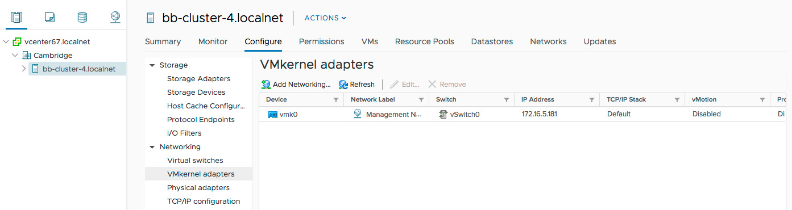
In the Add Networking dialog:
Select VMkernel Network Adapter (not Virtual Machine Port
Group.)
Select New standard switch, and set the MTU.
Add all physical interfaces to the switch that will be participating in
iSCSI traffic by clicking the green “+” button. Here, we’ve added vmnic2
and (the ridiculously-named) vmnic1000202.
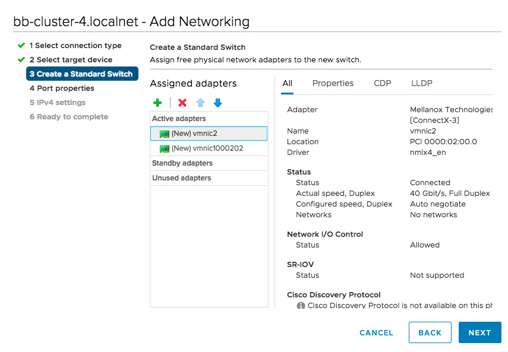
Label the “Network” to make it clear that this is one member of a port
group for iSCSI traffic. Here, we chose “iSCSI pg1”. Select (at least)
vMotion and Provisioning services.
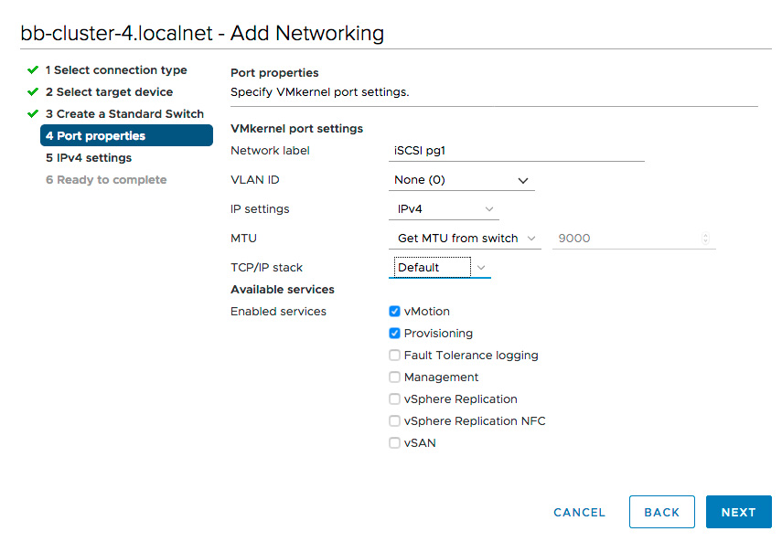
On the next screen, enter the port group’s IP address and netmask.
Finally, complete the workflow.
For the second port, follow the same procedure, except part 2:
Select an existing standard switch, where you will select the
vSwitch created for the first port in this group:
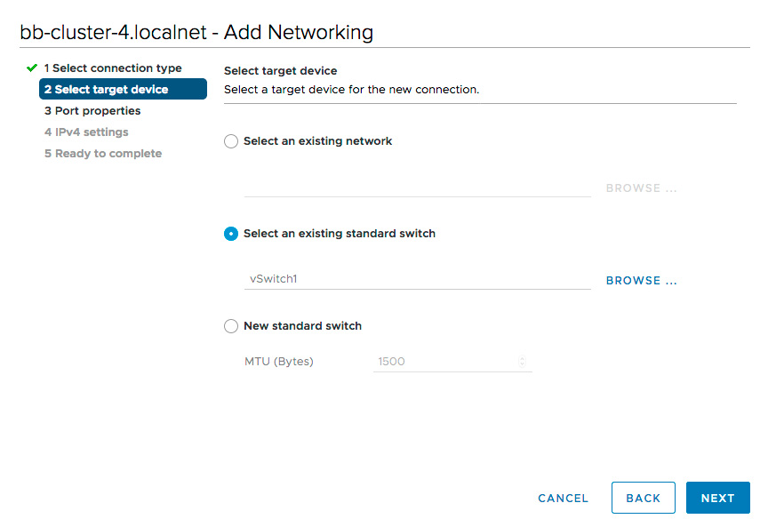
You should now see the two VMkernel adapters you’ve just created:
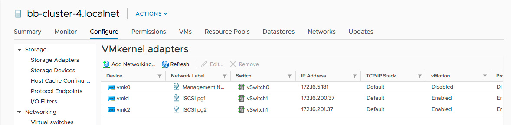
Next, select Networking / Virtual switches and scroll down to see the
new vSwitch.
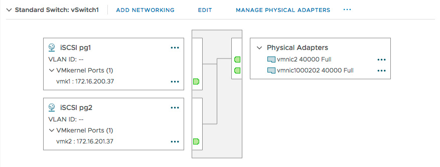
Next, we’re going to edit the configuration of each of the VMkernel adapters.
Select the three dots to the right of the first adapter (here, it’s
“iSCSI pg1”).
Select Edit Settings in the small box that pops up.
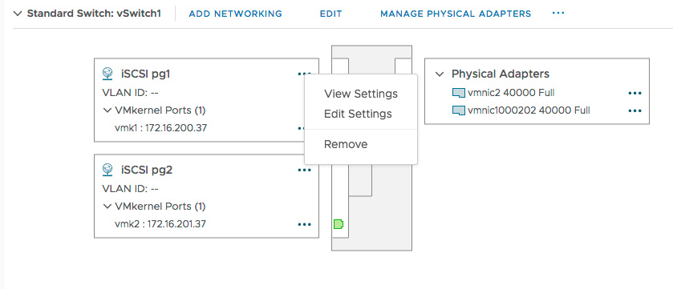
In the Edit Settings dialog, select Teaming and failover from the
column on the left.
Select the checkbox next to Override
Then, move one physical adapter down below Unused adapters. Below,
we’ve done this to the vmnic100202 adapter.
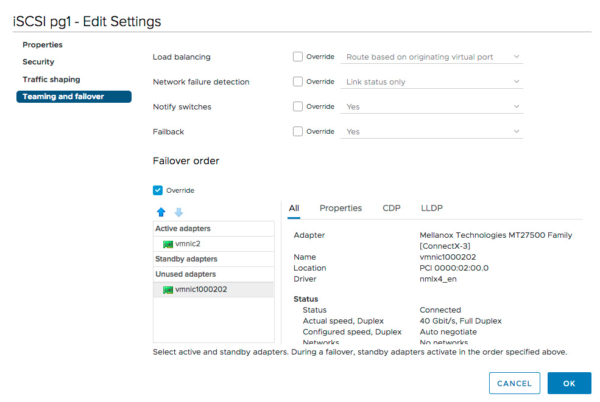
Repeat this process for the second VMkernel adapter, only this time moving the
other physical adapter down below Unused adapters. Here, that’s vmnic2.
Finally, you need to bind the port groups to the iSCSI adapter.
Select Storage / Storage Adapters.
Select the iSCSI software adapter.
Select Network Port Binding.
Select Add.
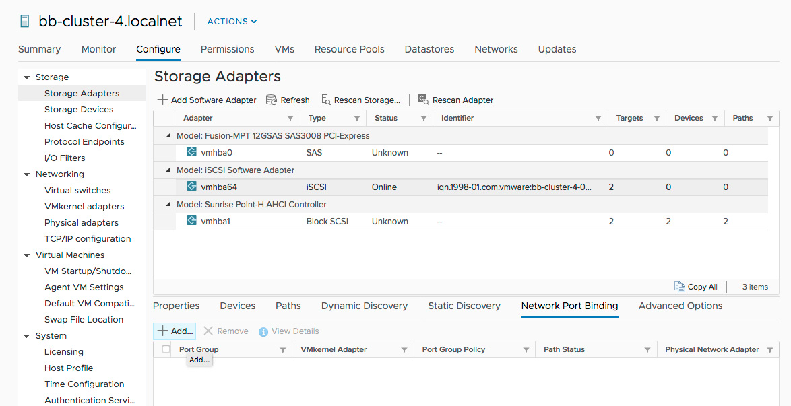
Select the two VMkernel adapters, then select OK.
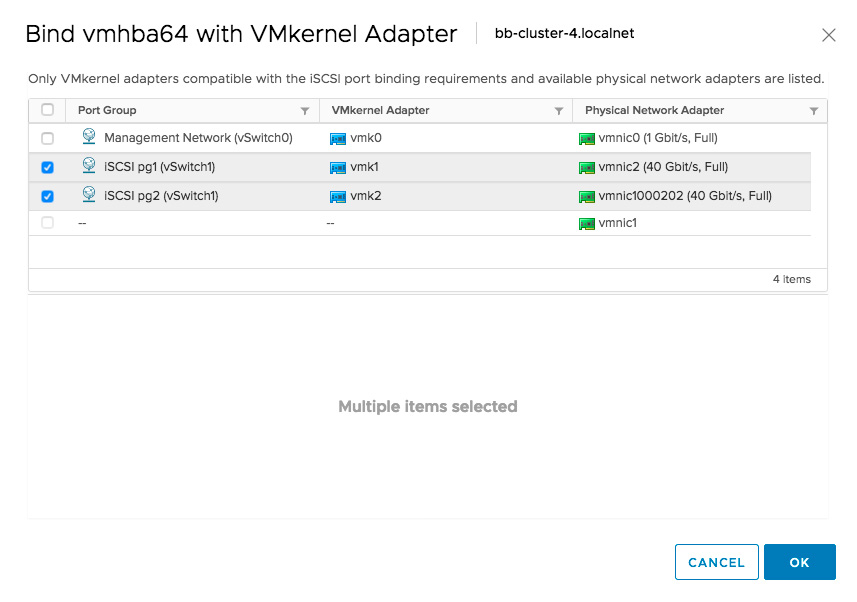
For more depth on multipathing, consult the following articles:
If you’re not installing with a multi-complex dataplane, you can skip
this section.
VMware needs a little additional configuration to take advantage of Blockbridge
5.0’s multi-complex feature. The independent performance and failure domains
of multi-complex advertise iSCSI target portals on a range of TCP ports from
3260 to 3275. But out of the box, ESX refuses to speak iSCSI to anything
except 3260. To be able to talk to ports 3261-3275, we will have to add entries
to the ESXi firewall.
There are two options for changing the firewall and both come with some
caveats: you can either drop the firewall rules and associated commands into
VMware’s equivalent of ye olde /etc/rc.local or you can install the unsigned
“Blockbridge VIB”.
Option 1: /etc/rc.local.d/local.sh
VMware’s firewall rules can be augmented by adding additional files in
/etc/vmware/firewall. However, nothing you put in there survives a
reboot. The technique described below is ugly, but it works. You put the rules
and commands to refresh them in /etc/rc.local.d/local.sh. The server
executes that script on startup, and poof, you have firewall rules.
Edit /etc/rc.local.d/local.sh to add the Blockbridge firewall definitions,
which are bookended by # BLOCKBRIDGE ISCSI FIREWALL RULES ###. When ESXi
runs local.sh on startup, the script creates the file
/etc/vmware/firewall/blockbridge.xml.
[root\@esx:/etc/vmware/firewall\] vi /etc/rc.local.d/local.sh
#!/bin/sh
# local configuration options
# Note: modify at your own risk! If you do/use anything in this
# script that is not part of a stable API (relying on files to be in
# specific places, specific tools, specific output, etc) there is a
# possibility you will end up with a broken system after patching or
# upgrading. Changes are not supported unless under direction of
# VMware support.
# Note: This script will not be run when UEFI secure boot is enabled.
# BLOCKBRIDGE ISCSI FIREWALL RULES
##################################
cat > /etc/vmware/firewall/blockbridge.xml <<EOF
<!-- Firewall configuration information for Blockbridge -->
<ConfigRoot>
<service>
<id>Blockbridge</id>
<rule id='0000'>
<direction>outbound</direction>
<protocol>tcp</protocol>
<porttype>dst</porttype>
<port>3261</port>
</rule>
<rule id='0001'>
<direction>outbound</direction>
<protocol>tcp</protocol>
<porttype>dst</porttype>
<port>3262</port>
</rule>
<rule id='0002'>
<direction>outbound</direction>
<protocol>tcp</protocol>
<porttype>dst</porttype>
<port>3263</port>
</rule>
<rule id='0003'>
<direction>outbound</direction>
<protocol>tcp</protocol>
<porttype>dst</porttype>
<port>3264</port>
</rule>
<enabled>true</enabled>
<required>false</required>
</service>
</ConfigRoot>
EOF
chmod 444 /etc/vmware/firewall/blockbridge.xml
chmod +t /etc/vmware/firewall/blockbridge.xml
localcli network firewall refresh
localcli storage core adapter rescan \--all
# BLOCKBRIDGE ISCSI FIREWALL RULES
##################################
exit 0
Run ./local.sh once manually to permit connection to those ports:
Option 2: Install the Blockbridge Firewall Rule VIB
This option seems like the better choice at first blush. You get a small
package of software from Blockbridge Support and install it like a package
install, only from esxcli. However, the downside is potentially major: our VIB
is not signed. In order to install our VIB on a production server, you have to
lower its acceptance level to CommunitySupported (from either VMwareCertified
or PartnerSupported.) VMware threatens that they could deny support if they
see your server running CommunitySupported VIBs.
The above shows the t0 team configured with active/active LACP. Use the
“fast_rate” option to ensure that it only waits for one second before giving
up on a path (slow is 30 seconds!) Using “l3” and “l4” for tx_hash factors in
all endpoint addresses as well as port numbers to the link selection:
l3 — Uses source and
destination IPv4 and IPv6 addresses.
l4 — Uses source and
destination TCP and UDP and SCTP ports.
Configure the same team on both primary cluster members. Then, add the VIPs to
the cluster configuration, using the team’s interface name. Open the VIPs for
storage access by adding them from the flyout menu on the storage node.
Provisioning a Blockbridge Service, Disk, Target, and Profile
This section describes how to do the Blockbridge side of the
configuration. You’ll create a virtual storage service for each Blockbridge
dataplane complex. Inside those storage services, you will create one disk per
VMware datastore, and an iSCSI target with a LUN for each disk. A global set of
CHAP credentials will serve to authenticate your VMware cluster to the
Blockbridge dataplane endpoints.
Start by logging in to the administrative “system” user in the Blockbridge web
GUI. On the infrastructure tab, manually provision a virtual storage service
(VSS) on each dataplane complex that will be connected to your VMware
installation. If you’re planning to create multiple VMware datastores per
dataplane complex, you can create the disks to back them inside a single
virtual service.
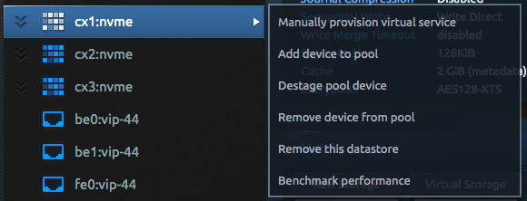
Select “Manually provision virtual service”. On the dialog window that pops up,
create a label for the service that references the label of the dataplane
complex. You may create the service inside the “system” account, or you may
wish to create a dedicated account for your VMware storage.
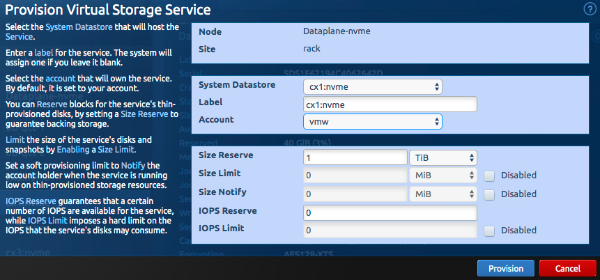
Reserve enough size to hold the contents of the VMware datastores you intend to
create. If you created the VSS on a different account (as we did with the “vmw”
account here), log out, and log back in as that account.
The easiest way of managing authentication for your VMware deployment is to use
a global initiator profile. Create one from the flyout menu off of Global, in
the Storage tab.
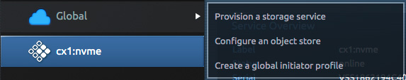
In the “Create Initiator Profile” dialog that opens, enter a CHAP username
(here, “esx\@vmw”) and a CHAP secret, with confirmation.
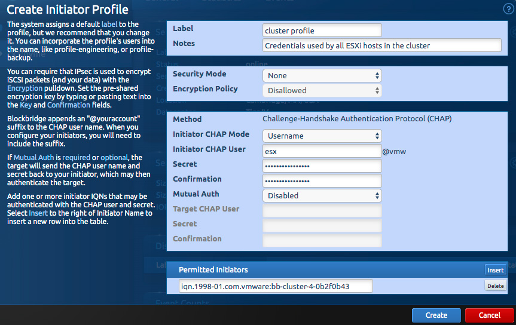
You will need the iSCSI IQN from the iSCSI adapter in each ESXi host. Find it
under Host -> Configure -> Storage/Storage Adapters in the vSphere GUI. Paste
each host’s IQN into the “Permitted Initiators” section of the dialog then
click “create”.
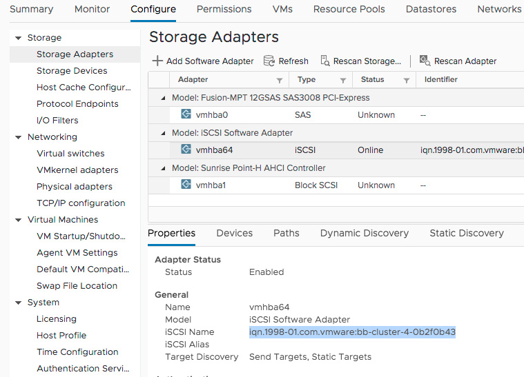
Next, create one or more disks in the service to host your VMFS datastores. If
you have several disks to create, you may wish to move to the Blockbridge CLI
tool to do it. Both the GUI and CLI are covered below.
Select “Create a disk” from the storage service’s flyout menu, shown below.
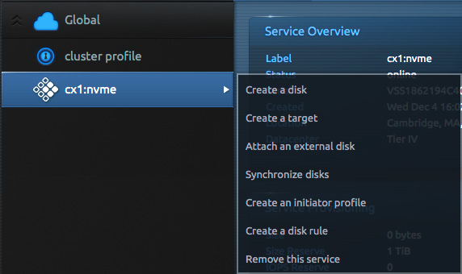
Enter the size of the disk in the dialog that pops up, along with an
appropriate label. Click “create”.
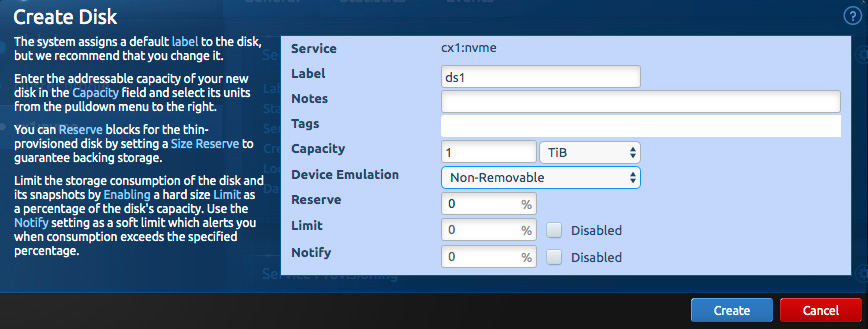
From the CLI, it’s:
bb disk create \--vss cx1:nvme \--label ds1 \--capacity 1TiB
Next, create a single iSCSI target on the Blockbridge side. Even if you created
multiple disks, a single target will suffice. Select “Create a target” from the
virtual storage service’s flyout menu (shown earlier).
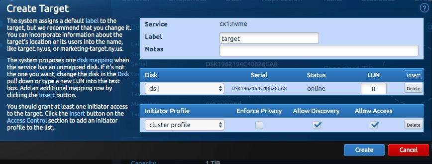
Click “insert” to add additional disks to the target. Select the label of the
global initiator profile you created earlier to grant access via those
credentials.
Creating the target is a multi-step process from the CLI:
From the vSphere GUI, select Host -> Configure -> Storage/Storage Adapters,
and click on the iSCSI adapter. Under Properties, scroll down to
Authentication. Click Edit…
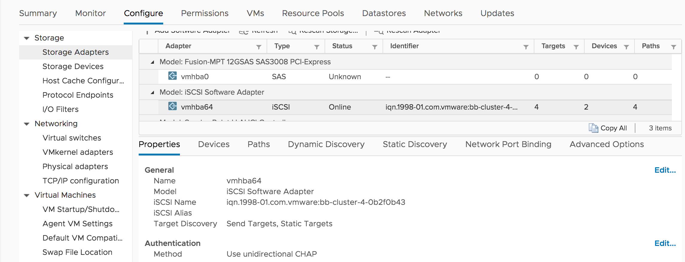
Enter the CHAP username and secret from the Blockbridge initiator
profile. Blockbridge targets support mutual authentication – a good idea if
you’re concerned about an attacker interposing a illegitimate iSCSI target in
your infrastructure.
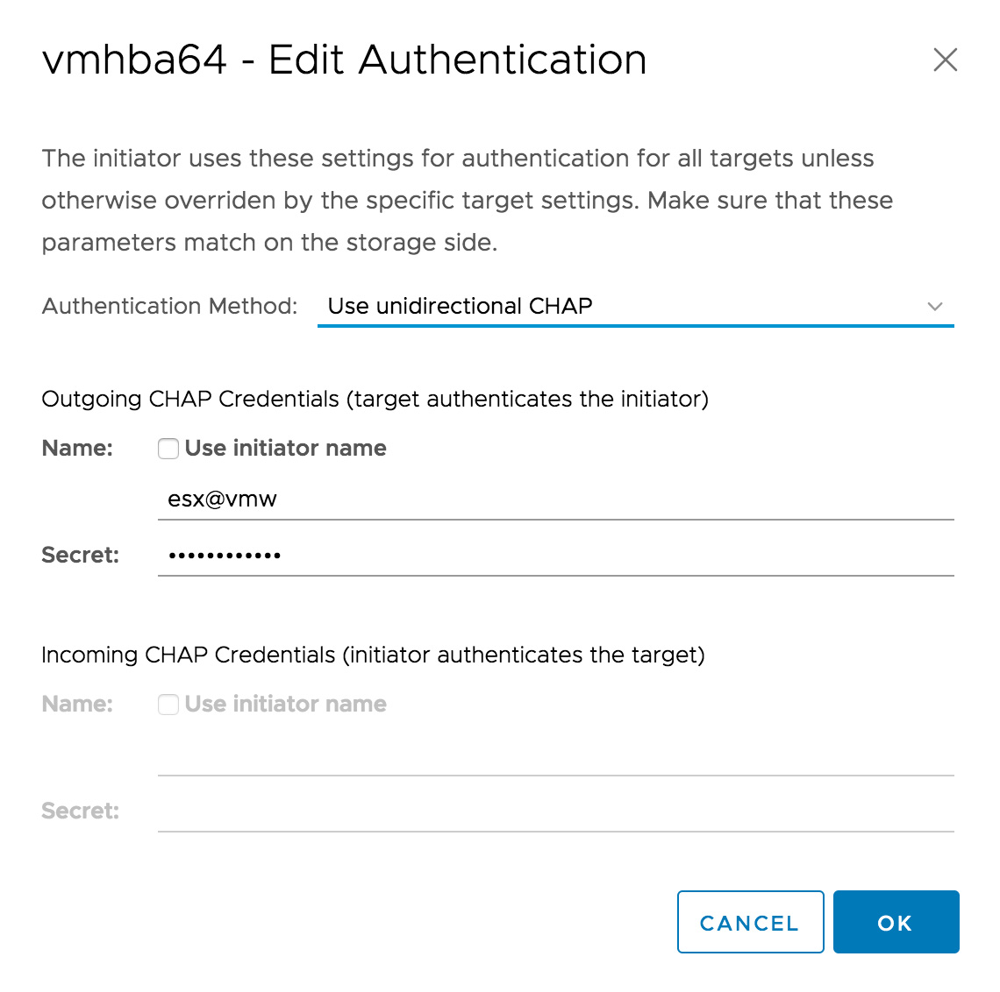
Note that VMware’s iSCSI software adapter is limited to one set of “parent”
CHAP authentication credentials that can be inherited into the static and
dynamic targets. If you need to use other iSCSI targets with different
credentials, you can unclick “Inherit authentication settings from parent” and
enter a new set of CHAP credentials each time you add a target.
Staying on the iSCSI software adapter, select Static Discovery3, then click
Add…
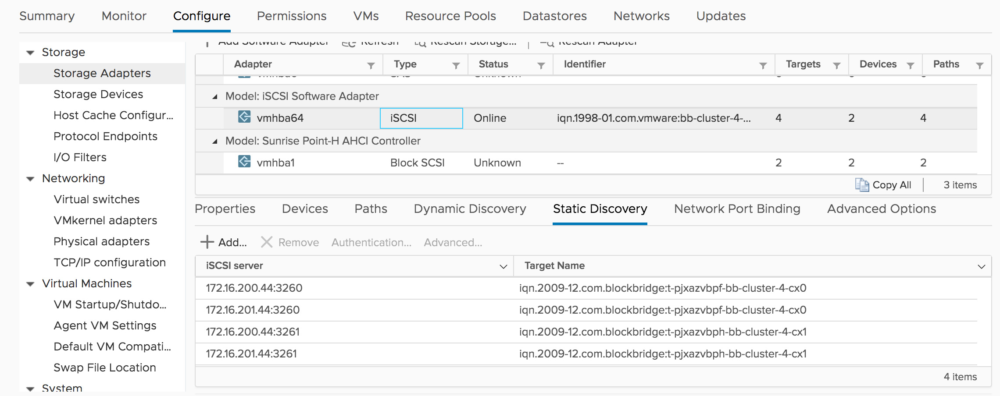
On the dialog that pops up, enter one of the Blockbridge target’s portal IP
addresses, along with the port, and the target’s IQN. Note that the port in
this case is 3261.
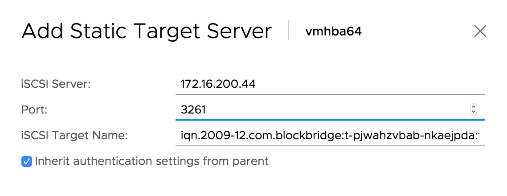
With static discovery, you have to add each path manually. You may find it
easier to use esxcli to add static targets. The following example adds paths
for two target portal IP addresses4.
If you need per-target CHAP settings, update the target with the following
command. It will prompt you to enter the secret, so it doesn’t show up in
command line logs.
esxcli iscsi adapter target portal auth chap set --adapter=vmhba64 \
--direction=uni --authname=esx\@vmw \
--secret --level=required --address=172.16.200.44:3261 \
--name=iqn.2009-12.com.blockbridge:t-pjwahzvbab-nkaejpda:target
Next up, change the multipathing policies for each LUN to Round Robin. From
the vSphere GUI, click Edit Multipathing… then change the policy.
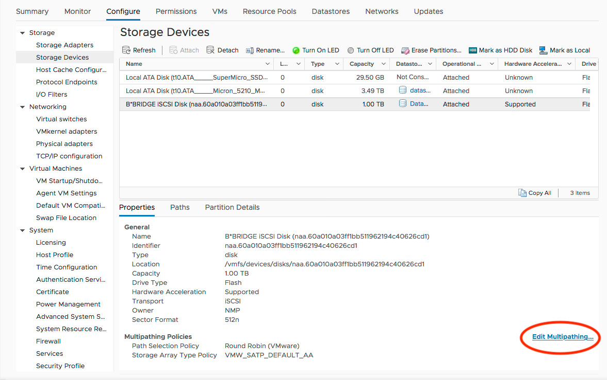
Alternatively, from esxcli, list the devices with:
esxcli storage nmp device list
And set the roundrobin policy on a device with:
esxcli storage nmp device set --psp=VMW_PSP_RR --device=naa.60a010a071105fae1962194c40626ca8
Note that the --psp and --device options must be specified in the order
shown. The command inexplicably fails if you swap them.
To change the path selection policy of all “naa.” devices in bulk, wrap the
command in a for loop, as follows:
for dev in $(esxcli storage nmp device list | egrep ^naa); do
esxcli storage nmp device set --psp=VMW_PSP_RR --device=${dev}
done
For more path selection configuration, refer to the section on Tuning the Hosts
below.
Finally, verify that all paths to each device are working. Select Storage
Devices -> Paths. Each path should show Active status.
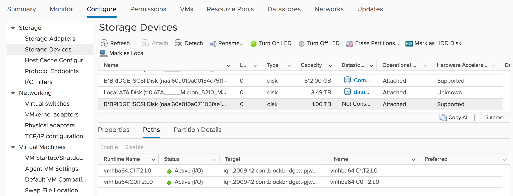
Creating a VMFS Datastore
Create one VMFS datastore for each disk created above.
Whenever possible, use VMFS version 6. VMFS-6, introduced with vSphere 6.5,
includes numerous performance and stability improvements. In particular, the
following enhancements are notable for Blockbridge installations:
VMFS-6 metadata is aligned to a 4 KiB blocksize
Improved miscompare handling for ATS heartbeats
Reduced lock contention
Multiple concurrent transactions
We recommend VMFS-6 for all new installations.
To create the datastore, right-click on a host then select Storage -> New
Datastore. We recommend creating the datastore from a single disk and setting
its size to consume 100% of that disk.
The iSCSI MaxCommands parameter controls how many reads and writes can be
in-flight to the storage before additional I/O’s begin to queue in the ESXi
host. It defaults to 128. We recommend you increase this setting to 256 for a
Blockbridge LUN.
The risk of setting this number too low is obvious: performance suffers because
vSphere can’t get enough work out into the LUN. There really isn’t a practical
downside to doubling the value to 256. It’s always better to get the I/O out to
the storage subsystem, rather than leave it queued on the host.
Increasing the queue depth requires a host reboot. Use the following esxcli
command to increase the depth, then reboot the ESXi host.
esxcli system module parameters set -m iscsi_vmk -p iscsivmk_LunQDepth=256
After reboot, validate that your iSCSI devices have the increased “Device Max
Queue Depth”.
esxcli storage core device list
...
naa.60a010a03ff1bb511962194c40626cd1
Display Name: B\*BRIDGE iSCSI Disk (naa.60a010a03ff1bb511962194c40626cd1)
Has Settable Display Name: true
Size: 1048576
...
Device Max Queue Depth: 256
No of outstanding IOs with competing worlds: 32
In a Linux guest, spin up this 256 queue depth, 4K random read workload with
fio. This example uses reads on the root disk. Do not change this test to
write.
esxcli storage core device set --sched-num-req-outstanding
vSphere has a confusingly-named setting that controls how deep the I/O queue is
for a guest when other guests are accessing the same storage device. In earlier
versions of ESXi, this used to be controlled via the global parameter
Disk.SchedNumReqOutstanding. But starting in 5.5, control has been relegated to
an esxcli-only parameter, viewable in the output of esxcli storage core device
list: “No of outstanding IOs with competing worlds”, like this;
[root@esx:~] esxcli storage core device list
naa.60a010a0b139fa8b1962194c406263ad
Display Name: B*BRIDGE iSCSI Disk (naa.60a010a0b139fa8b1962194c406263ad)
…
Device Max Queue Depth: 128
No of outstanding IOs with competing worlds: 32
If only one guest is sending I/O to a storage device, it’s permitted to use the
full queue depth (128, or 256 if doubled as recommended.) As soon as a second
guest begins accessing the device, by default, the queue depth of each guest
drops to 32.
Generally, we recommend increasing this setting to 64 if you’ve doubled the
iSCSI LUN queue depth to 256. In situations where multiple guests are accessing
a device at the same time, the queue depth of 64 ensures that no guest claims
more than their fair share of the storage performance, yet still has enough
depth to get commands out to the LUN. And, as will be the case much of the
time, when only one guest is accessing the device, it can do so with the full
depth of the device’s queue.
In some situations, even this behavior is not desirable. You can confirm this
is happening to your guests by running esxtop and watching the DQLEN column. If
it’s stuck at 32 (or 64) for multiple guests, it’s a safe bet they’re subject
to this parameter. If you believe that your guest workloads are unfairly
penalized by this setting, try increasing it to the device queue depth.
[root@esx:~] esxcli storage core device set -sched-num-req-outstanding 256 -d naa.60a010a0b139fa8b1962194c406263ad
Default: Do not Alter Behavior on Queue Full Conditions
VMware : Host -> Configure -> System / Advanced System Settings: Disk.QFullSampleSize
vSphere can dynamically reduce its queue size if the backing storage reports a
SCSI TASK SET FULL or BUSY status. This behavior allows it to adapt to arrays
with shallow queue depths. But with the default queue depth of 128, or even
doubled to 256, the Blockbridge dataplane’s queue isn’t going to report this
status. Our recommendation is to leave the Disk.QFullSampleSize parameter set
to zero (its default), disabling this feature.
Lower the Round Robin Path Selection IOPS Limit to 8
esxcli storage nmp psp roundrobin deviceconfig set ...
By default, the round-robin iSCSI multipathing plug-in sends 1,000 I/O’s down
one active path before switching to another. This technique often fails to
unlock the full bandwidth of multiple paths. With a queue depth of 128 or 256,
the workload “sloshes” back and forth between the two paths, rather than
saturating both of them. By lowering the I/O limit to 8, VMware switches paths
after every eight I/O’s issued, more efficiently using the network.
Quite a few vendors recommend lowering this limit to 1 I/O. However, there are
some processing efficiencies to be had by staying on the same path for several
I/O’s in a row. Notably, using a slightly larger setting (like 8) interacts
favorably with NIC receive coalescing on the Blockbridge side for writes, and
on the ESXi side for reads.
The change can only be made from the command line. Use esxcli storage nmp
device list to display the SCSI ID’s of your devices and their current path
selection policies:
esxcli storage nmp device list
naa.60a010a03ff1bb511962194c40626cd1
Device Display Name: B*BRIDGE iSCSI Disk (naa.60a010a03ff1bb511962194c40626cd1)
Storage Array Type: VMW_SATP_DEFAULT_AA
Storage Array Type Device Config: {action_OnRetryErrors=off}
Path Selection Policy: VMW_PSP_RR
Path Selection Policy Device Config: {policy=rr,iops=1000,bytes=10485760,useANO=0; lastPathIndex=0: NumIOsPending=0,numBytesPending=0}
Path Selection Policy Device Custom Config:
Working Paths: vmhba64:C1:T0:L0, vmhba64:C0:T0:L0
Is USB: false
The Blockbridge dataplane fully supports the VAAI command set, including:
offloaded storage vMotion with EXTENDED COPY,
server-side locking with COMPARE AND WRITE, and
server-side zeroing with WRITE SAME 10 and 16.
All of these parameters should be enabled with a value of “1”, under Advanced
System Settings. By default, they’re enabled, so no change should be required.
VMware : Host -> Configure -> System / Advanced System Settings: DataMover.HardwareAcceleratedInit
VMware : Host -> Configure -> System / Advanced System Settings: DataMover.HardwareAcceleratedMove
VMware : Host -> Configure -> System / Advanced System Settings: VMFS3.HardwareAcceleratedLocking
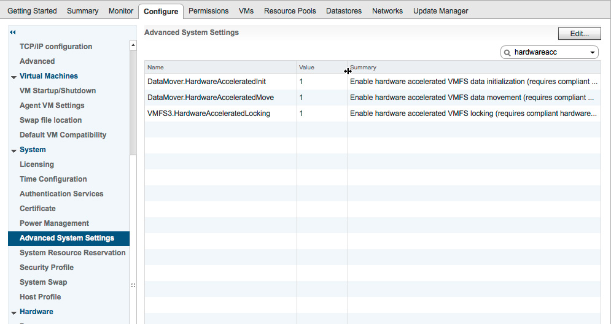
Use Optimized ATS Heartbeating (VMFS-6)
VMware : Host -> Configure -> System / Advanced System Settings: VMFS3.UseATSForHBOnVMFS5
Keep this parameter set to the default value of 1 for ESXi 6.5 or newer
installations with VMFS-6 volumes. Blockbridge fully supports the SCSI “atomic
test and set” COMPARE AND WRITE command. (It’s also used for VAAI Storage
vMotion.) It doesn’t cause any notable load on the data plane. The legacy
alternative to ATS heartbeating is more cumbersome.
Versions of ESXi earlier than 6.5, or those using VMFS-5 volumes, may not have
properly handled ATS timeouts, incorrectly registering “miscompares”. (Cormac
Hogan writes about this in some detail here:
https://cormachogan.com/2017/08/24/ats-miscompare-revisited-vsphere-6-5/.)
For these older versions of ESXi, it’s best to disable this setting.
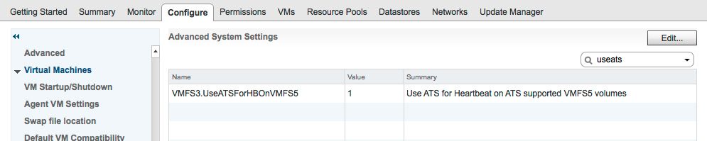
Halt VMs on Out-of-Space Conditions
VMware : Host -> Configure -> System / Advanced System Settings: Disk.ReturnCCForNoSpace
If a volume backing a datastore runs out of space, VMware thoughtfully pauses
any VM that attempts to allocate storage, instead of passing the error
through. Many applications do not handle out-of-space particularly well, so
this option can be a lifesaver. Documents from VMware refer to this as the
“thin provisioning stun” feature. It’s enabled by default, with
Disk.ReturnCCForNoSpace = 0. Somewhat confusingly, this “0” setting instructs
VMware to NOT return an error (a SCSI CHECK CONDITION) when it runs out of
space. We recommend that you leave this set to 0, allowing it to pause the VMs.
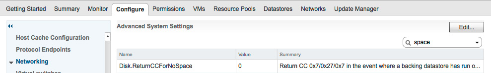
The SCSI status 0x7/0x27/0x7 is SPACE ALLOCATION FAILED – WRITE PROTECT.
You may be able to squeeze out the last 5% of performance by switching to
jumbos. But they can come with significant costs, both in implementation and in
the debug time associated with strange problems. If you’re already using jumbo
frames at L2, you’ll need to make sure you’ve configured vSphere for jumbo
frames. If you’re not using jumbos yet, consider carefully whether you want to
undertake the transition.
Navigate to Host -> Configure -> Networking / VMkernel adapters
For each adapter the must be modified:
a. Click the pencil icon,
b. Select “NIC settings”,
c. Change the MTU to 9000, and
d. Press “OK”.
Navigate to “Virtual switches”
For each vSwitch to be modified:
a. Click the pencil icon,
b. Under “Properties”, change the MTU to 9000, and
Plan for a Blockbridge dataplane failover time of 30 seconds. This is
transparent for applications and virtual machines, so long as the timeouts are
set to be long enough. During a dataplane failover, ESXi’s iSCSI adapter
notices that the session is unresponsive, typically within 10 seconds. It
attempts to reconnect and login. The LoginTimeout setting must be long enough
to successfully ride out a failover. We recommend 60 seconds, to be on the
safe side.
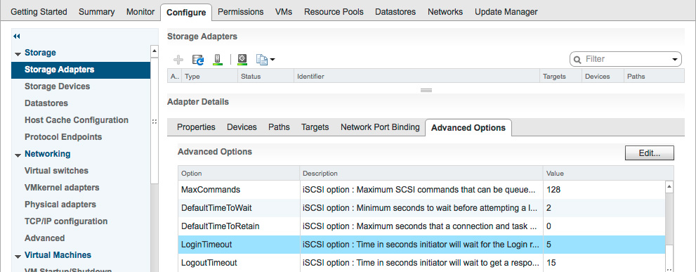
From the CLI:
esxcli iscsi adapter param set --adapter=vmhba64 --key=LoginTimeout --value=60
DelayedAck was intended to boost performance by reducing the number of TCP
segment acknowledgements. Several years back, this triggered some strange
performance problems with certain iSCSI arrays with very custom TCP/IP
stacks. These arrays were effectively acknowledging every other TCP segment,
and could be left waiting periodically for VMware’s delayed ACK.
Blockbridge isn’t subject to any problems related to the use (or non-use) of
DelayedAck. Our stance is that it’s very unlikely to make a difference either
way.
If you choose, you can disable DelayedAck for the iSCSI adapter or for
individual targets. The per-adapter setting is on the Advanced Options tab
for the iSCSI software adapter. Drill down a couple more layers to access the
per-target setting, by clicking on the Targets tab in the adapter, then
Dynamic Discovery or Static Discovery, select the appropriate target,
and click Advanced. Un-check Inherit for the setting, then disable it.
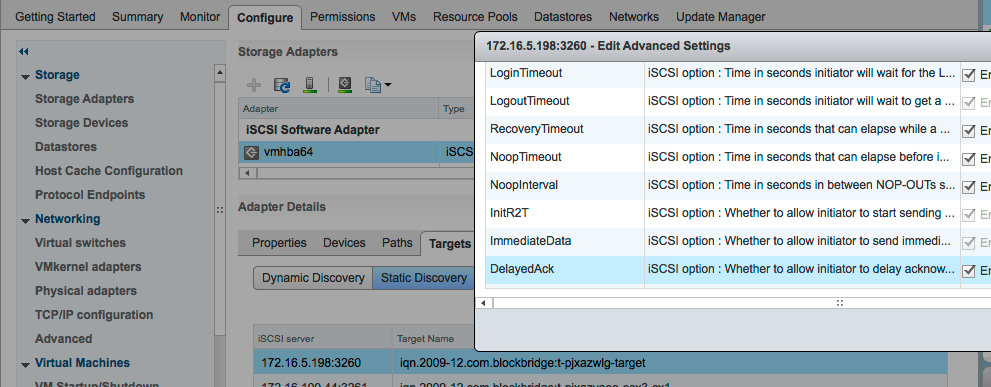
Large Receive Offload Maximum Length
The /Net/VmxnetLROMaxLength parameter sets the size of the Large Receive
Offload (LRO) buffer. By default, it’s set to 32,000 bytes. Increasing the size
of this may improve throughput.
esxcfg-advcfg -s 65535 /Net/VmxnetLROMaxLength
NIC Interrupt Balancing
Leave NIC interrupt balancing set to the default: enabled.
esxcli system settings kernel set -s intrBalancingEnabled -v true
Yes, to achieve the lowest possible latency, you ideally want explicit control
over the CPU core where interrupts are processed, and also where everything
else on the system is scheduled. But, it’s very difficult to capture and
maintain that kind of control on an ESXi server. We recommend that you accept
the default balancing. ESXi appears to do a decent job of avoiding cores under
heavy utilization by VMs.
Mellanox NIC Tuning
On ConnectX-3 NICs, we recommend disabling adaptive receive interrupt
moderation. On newer cards, it behaves well. But it doesn’t seem to quite do
the right thing on these older NICs. In addition to this change, increase the
size of the NIC’s ring buffer, explicitly eliminate transmit coalescing, and
set a modest value of 3 microseconds for receive coalescing. Be sure to do it
for all ports.
esxcli network nic ring current set -r 4096 -n vmnicX
esxcli network nic coalesce set –-tx-usecs=0 –-rx-usecs=3 –-adaptive-rx=false -n vmnicX
Verify the tunings:
# esxcli network nic coalesce get
NIC RX microseconds RX maximum frames TX microseconds TX Maximum frames Adaptive RX Adaptive TX Sample interval seconds
------------ --------------- ----------------- --------------- ----------------- ----------- ----------- -----------------------
vmnic0 N/A N/A N/A N/A N/A N/A N/A
vmnic1 N/A N/A N/A N/A N/A N/A N/A
vmnic1000202 3 15 0 1 Off Off 0
vmnic2 3 15 0 1 Off Off 0
This optimization reduced the latency observed in the guest of a queue depth 1
4K read workload from 90us to 70us!
On ConnectX-4 or newer NICs, increase the size of the ring buffer, enable
adaptive-rx, and disable transmit coalescing:
esxcli network nic ring current set -r 4096 -n vmnicX
esxcli network nic coalesce set ---tx-usecs=0 ---adaptive-rx=true -n vmnicX
GUEST TUNING
Use the Paravirtual SCSI Adapter in Guests
Whenever possible, select the Paravirtual SCSI adapter for the SCSI
controller in each guest VM. This adapter offers the best performance and
lowest CPU utilization of any of the available options. It’s also the only
virtual adapter with a queue depth larger than 32 per device.
Linux kernels going all the way back to 2.6.33 include the necessary
vmw_pvscsi driver. For Microsoft Windows guests, install VMware tools.
Consult VMware’s KB article (https://kb.vmware.com/s/article/2053145) for
details on changing the queue depths of the Paravirtual SCSI adapter inside the
guest OS. Unlike the defaults in the article, recent Linux installs seem to be
defaulting to 254 queue depth with 32 ring pages, so your installation may not
need additional tuning:
We recommend avoiding encrypted VMware virtual disks, for a few reasons:
Data stored in Blockbridge is always encrypted at rest.
Blockbridge data encryption is done in the storage hardware; your
hypervisors won’t spend any CPU cycles on the cryptography.
Blockbridge dataplanes will not be able to use data reduction
techniques on encrypted data.
If your application requires a secure iSCSI transport between the ESXi
host and the Blockbridge dataplane, please contact Blockbridge support.
(Encryption is a relatively new feature, introduced in vSphere 6.5.)
Thin, Lazy Zeroed, or Eager Zeroed?
VMware famously has three types of guest disks: Thin, Lazy Zeroed, and
Eager Zeroed. With a Blockbridge array, Thin disks are nearly always
the right choice.
There are three factors at play in our recommendation:
Blockbridge doesn’t allocate storage for zeroes. VMware uses VAAI zeroing
commands (SCSI WRITE SAME) for the two Zeroed disk types. If the
regions of disk it’s zeroing are not allocated, Blockbridge doesn’t bother
allocating the storage. It’s already zeroed.
VMware has its own VMFS metadata to allocate. Though these operations are
fast, it’s a consideration. VMFS has to track the block allocations, so
doing Eager Zeroed would get these all out of the way up front.
Lazy Zeroed disks zero the storage, then write it. The write is
serialized behind the zeroing operation. Instead of simply sending the
write along to the Blockbridge LUN, where it can allocate storage
optimally, it takes an additional round trip to allocate storage first
before it can be written. Sure, the zeroing is very fast, but it’s still
additional latency. This is typically slower than the Thin disk
performance, where you “just write it”.
Blocks on Thin disks are always allocated on demand. There’s no zeroing
done ahead of time, or even just-in-time. In most cases, this is
preferable. They don’t take up space that they don’t need, and they don’t have
the write serialization penalty of Lazy Zeroed disks.
Improving Guest I/O Latency and Latency Consistency
Achieving the lowest possible latency inside a guest requires dedicating CPU
resources to it. For example, to dedicate a CPU core to a guest:
Select “High” Latency Sensitivity:
Add a CPU frequency Reservation for the full frequency of the CPU:
Set the SchedulingAffinity to a CPU core that has not been
dedicated to another VM:
VMware : VM -> Edit Settings -> VM Options -> Advanced
VMware : VM -> Edit Settings -> Virtual Hardware -> CPU -> Reservation
VMware : VM -> Edit Settings -> Virtual Hardware -> CPU -> Scheduling Affinity
DEPLOYMENT & TUNING CHEATSHEET
Deployment Steps
vmw: Configure iSCSI multipathing with port binding.
vmw: If you’re installing with a multi-complex Blockbridge dataplane,
configure the firewall to permit connections to ports other than 3260.
bb: Provision a Blockbridge virtual storage service for each Blockbridge
dataplane complex.
bb: Create a global initiator profile with the CHAP credentials to be used
by all ESXi hosts.
bb: Create one or more disks in each virtual service to back the VMFS
datastores. (Refer to discussion about VMFS datastore sizing).
bb disk create --vss cx1:nvme --label ds1 --capacity 1TiB
bb: Create a target in each virtual service and add LUNs for all
disks in the service.
esxcli iscsi adapter param set --adapter=vmhba64 --key=LoginTimeout --value=60
Increase Large Receive Offload Maximum Length
esxcfg-advcfg -s 65535 /Net/VmxnetLROMaxLength
Mellanox ConnectX-3 NIC Tuning (per-NIC)
esxcli network nic ring current set -r 4096 -n vmnicX
esxcli network nic coalesce set -a false -n vmnicX
esxcli network nic coalesce set –-tx-usecs=0 –-rx-usecs=3 –-adaptive-rx=false -n vmnicX
Mellanox ConnectX-4,5+ NIC Tuning (per-NIC)
esxcli network nic ring current set -r 4096 -n vmnicX
esxcli network nic coalesce set –-tx-usecs=0 –-adaptive-rx=true -n vmnicX
Host Tuning – Default Settings
Confirm that Queue Full Sample Size and Threshold are 0
esxcli storage core device list | grep 'Queue Full'
Queue Full Sample Size: 0
Queue Full Threshold: 0
Queue Full Sample Size: 0
Queue Full Threshold: 0
Confirm that VAAI Commands are Enabled
esxcli system settings advanced list -o /VMFS3/HardwareAcceleratedLocking
…
Int Value: 1
esxcli system settings advanced list -o /DataMover/HardwareAcceleratedMove
…
Int Value: 1
esxcli system settings advanced list -o /DataMover/HardwareAcceleratedInit
…
Int Value: 1
Confirm that the SCSI “Atomic Test and Set” Command is Used
esxcli system settings advanced list -o /VMFS3/UseATSForHBOnVMFS5
…
Int Value: 1
Confirm that VMs are Halted on Out of Space Conditions (option should be disabled)
esxcli system settings advanced list -o /Disk/ReturnCCForNoSpace
…
Int Value: 0
Verify that NIC Interrupt Balancing is Enabled
esxcli system settings kernel list | grep intrBalancingEnabled
intrBalancingEnabled Bool true …
[Should I use many small LUNs or a couple large LUNs for Storage
DRS?] ↩
Opportunistically, you can use Dynamic Discovery for
single-complex dataplanes, or for the first complex on a
multi-complex dataplane. VMware’s dynamic discovery doesn’t support
target ports other than 3260. ↩
VMware’s older documentation is quicker to navigate than the new
stuff. Here’s a document with numerous helpful iSCSI CLI
configuration examples: vSphere 5 Command Line
Documentation↩